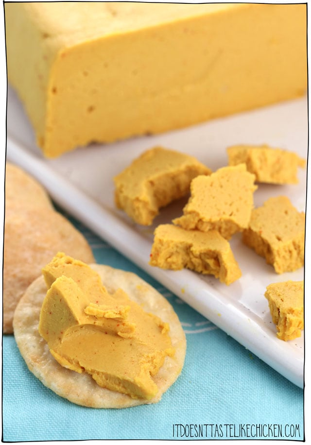

Vegan Sharp Cheddar Cheese

Description
Was giving up cheese the hardest part about going vegan for you? Do you miss the creaminess of a good quality cheddar?
Well look no further! This recipe is sure to fill that void. You might even be able to fool your non-vegan friends with this one...
Ingredients
- 1 cup softened raw cashews
- 1/4 cup refined coconut oil
- 3 tablespoons nutritional yeast
- 2 tablespoons lemon juice
- 1 1/2 tablespoons apple cider vinegar
- 1 tablespoon white miso paste
- 1 1/2 teaspoons paprika
- 1/2 teaspoon garlic powder
- 1/4 teaspoon turmeric
Steps
- Boil or soak the cashews to soften. Drain and rinse when ready
- Add all ingredients to a food processor, making sure everything is nice and smooth
- Scoop out the cheese mixture and place it in a container to harden for 3 hours. Serve chilled